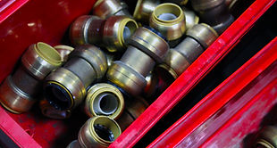
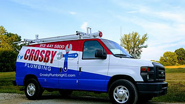

Residential Plumbing
From leaky faucets to full bathroom installations, our experienced team handles all residential plumbing repairs, installations, and maintenance.
Fully licensed, bonded & insured. Serving the Kansas City metro area with residential, commercial, and septic plumbing services since 2003.
Call 913-441-5800Same-Day Service Available
We offer residential, commercial and industrial plumbing services in the Kansas City metro area.

From leaky faucets to full bathroom installations, our experienced team handles all residential plumbing repairs, installations, and maintenance.

Reliable commercial plumbing for offices, restaurants, and retail spaces. We understand downtime costs money and work fast.
From designing a new septic system to simple lift pump repair, we provide complete septic service and support throughout the Kansas City metro.
Don't just take our word for it — hear from our satisfied customers.
"Not only was I impressed with the quick response time but the workers are phenomenal. I trust Crosby Plumbing 100%!"
"Mike Crosby owner of Crosby Plumbing in Bonner was here within 2 hours! He answered MANY questions in his patient, good natured way."
"They get to places quick and they get stuff done. They handle the jobs that I can't get done."